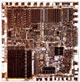

The 8086 Assembler Course Page
This page contains links and info regarding the course
121113 Computer Organization and the 8086 Assembly Language
at the MTA (The Academic College of Tel-Aviv-Yafo).
Links to the semster sites
Spring 2002
Summer 2002
Back to Eliav Gnessin's homepage
Last updated: July 2002.
 This page contains links and info regarding the course 121113 Computer Organization and the 8086 Assembly Language at the MTA (The Academic College of Tel-Aviv-Yafo).
This page contains links and info regarding the course 121113 Computer Organization and the 8086 Assembly Language at the MTA (The Academic College of Tel-Aviv-Yafo).